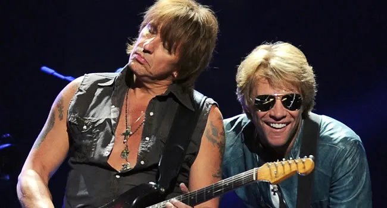

De los escenarios a la gran pantalla
De los escenarios a la gran pantalla
En 1982, Richie Sambora, tras no conseguir el puesto de guitarrista en Kiss, presenció un concierto de Bon Jovi en vivo en New Jersey. Al finalizar el show, se acercó a Jon Bon Jovi y le dijo: "Yo soy el guitarrista que necesitas". Después de tocar unos minutos, convenció a Jon de que se uniera a la banda.
Richie Sambora saltó a la fama con Bon Jovi con el lanzamiento del exitoso álbum "Slippery When Wet" en 1986. De este álbum se destacó especialmente el single «Wanted Dead Or Alive», donde Sambora brilló con sus impresionantes riffs y solos de guitarra.